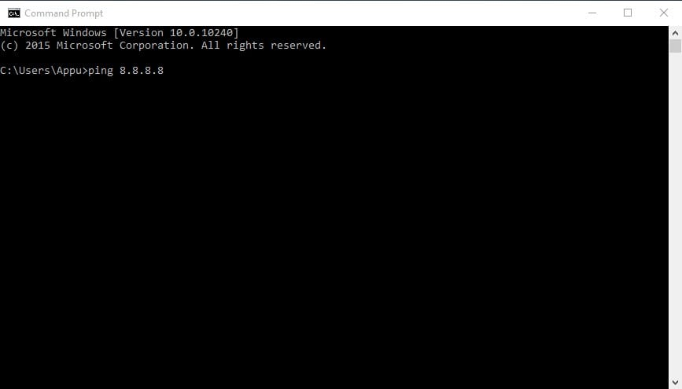
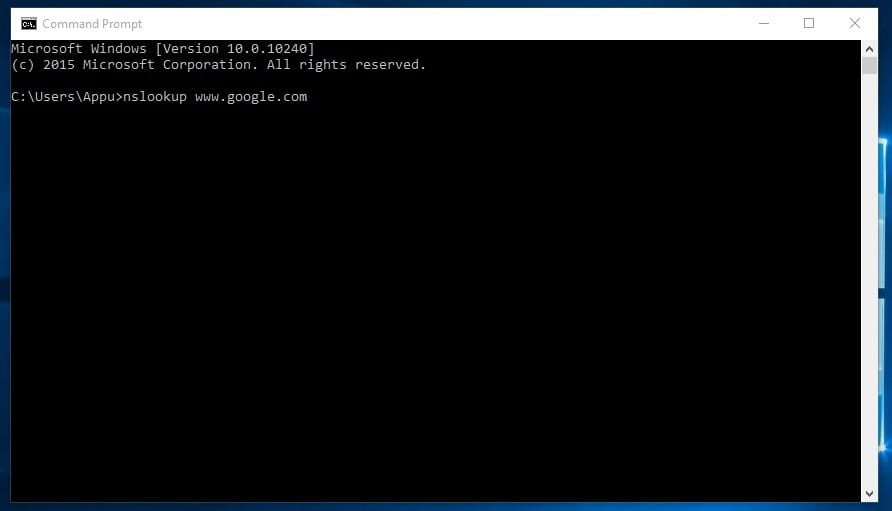
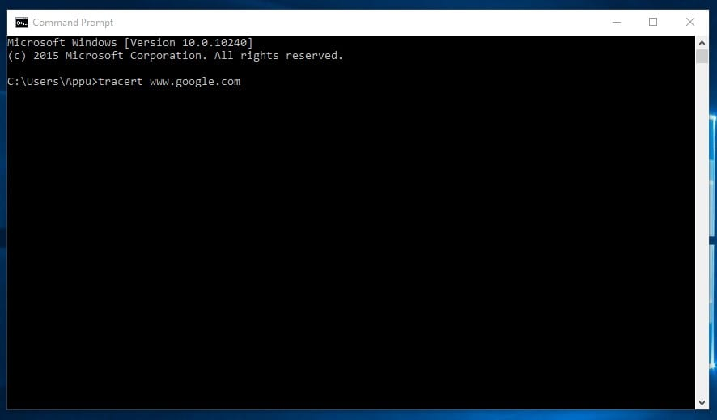
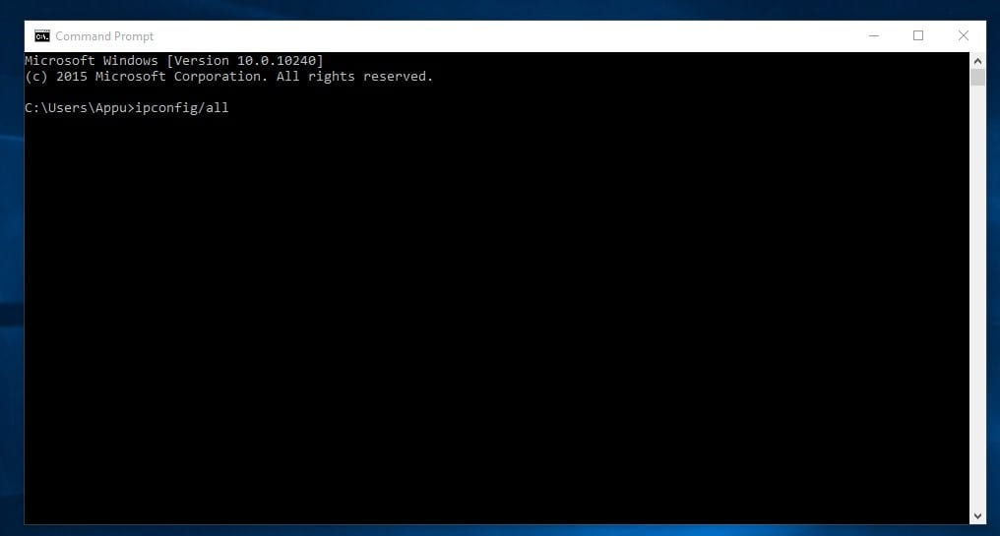
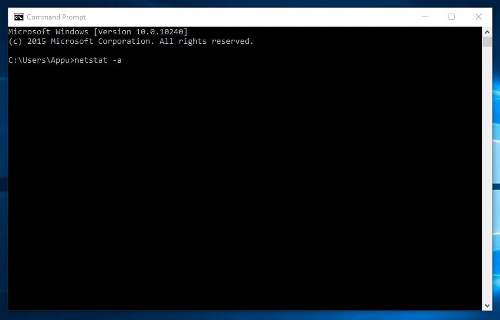
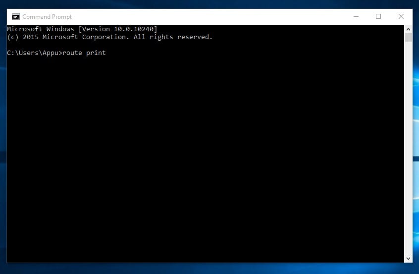
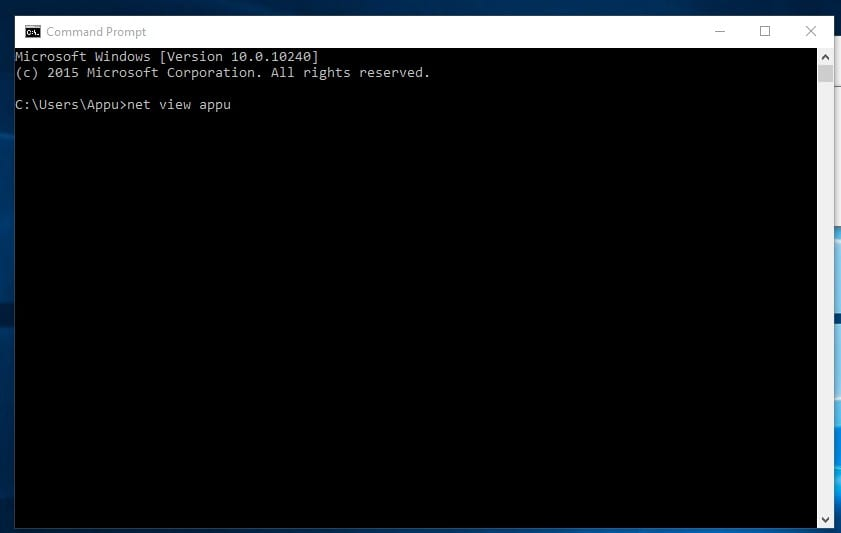
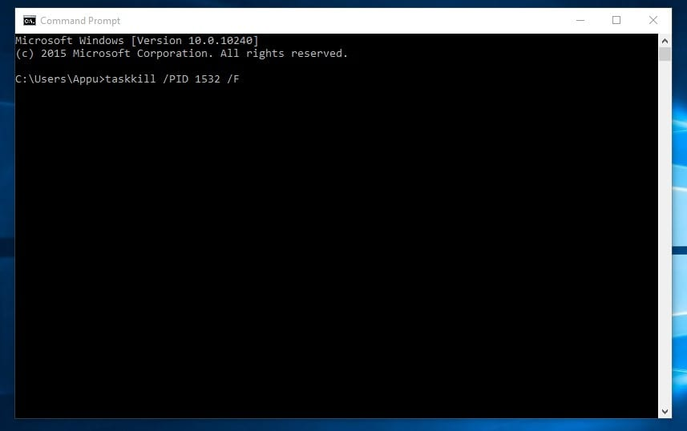
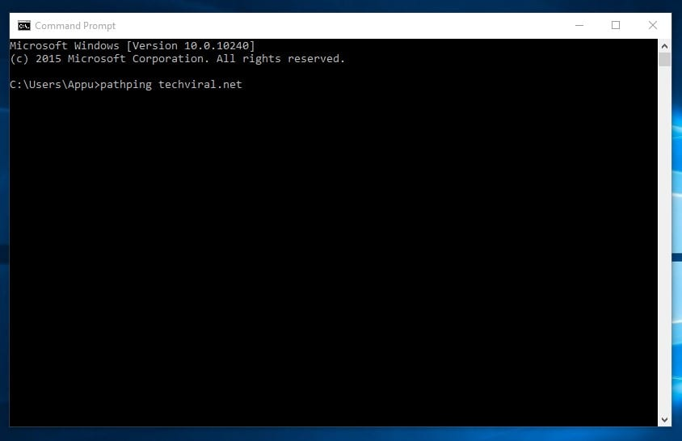

List of 10 Best CMD Commands Used In Hacking in 2021
In this article, we are about to share some of the best CMD commands that are widely used for Hacking purposes. So, let’s check out the list of best CMD commands for Windows 10 computers.
1. ping

This command uses your internet connection in order to send some packets of data to a specific web address then these packets are sent back to your PC. The test simply shows the amount of time it took to reach the specific address. In simple words, it helps you to know if the host you are pinging is alive.
You can use the Ping command whenever you need to verify that the host computer can connect to the TCP/IP network and its resources.
For example, you can type in Command prompt ping 8.8.8.8, which belongs to Google.
You can replace “8.8.8.8” with “www.google.com” or something else which you want to ping.
2. nslookup

It is a network administration command-line tool that helps you to obtain domain name or IP address mapping for any specific DNS record. Suppose you have a website URL but want to know its IP Address. You can simply type in CMD
nslookup www.google.com (Replace Google.com with your website URL of which you want to find the IP address)
3. tracert

You can say Trace Route. Like its name it allows users to trace the route than an IP packed has taken to reach a destination. The command calculates and displays the amount of time each hop took to reach a destination. You just need to type
tracert x.x.x.x (if you know the IP Address) or else you can type tracert www.google.com (If you don’t know the IP address)
4. arp
This command helps you to modify the ARP cache. You can run an arp-a command on each computer to see whether the computers have the correct MAC address listed for each other to ping each other succeed on the same subnet.
This command helps you to modify the ARP cache. You can run an arp-a command on each computer to see whether the computers have the correct MAC address listed for each other to ping each other succeed on the same subnet.
You can try typing arp-a in command prompt.
5. ipconfig

This is the command which shows every useful thing. It will show you the IPv6 address, temporary IPv6 address, IPv4 address, Subnet Mask, Default gateway, and all other things that you want to know.
You can type in the command prompt “ipconfig” or "ipconfig/all"
6. netstat

If you want to find out who is establishing a connection with your computer then you might try typing in the command prompt “netstat -a” it will display all the connections and you will get to know about the active connections and listening ports.
Type in command prompt "netstat -a"
7. Route

It is a command which is used to view and manipulate the IP routing table in the Microsoft Windows operating system. This command will show you the routing table, metric, and interface.
You can type in command prompt "route print"
8. Net View

This command displays the whole list of resources, computers, or domains that are shared by the specified computer.
You can type in command prompt "net view x.x.x.x or computername"
9. Tasklist

This command opens up an entire task manager on the command prompt. Users just need to enter the tasklist on CMD and they will see the list of all running processes. You can figure out all the wrongs with these commands.
Moreover, the command can also be used when you need to forcefully close any process. For example, if you want to kill PID 1532 process then you can enter the command:
taskkill /PID 1532 /F
10. Pathping

Well, pathping command is pretty much similar to the tracert, but it shows more detailed information. The commands take a few moments to complete as it analyzes the route taken and computes packet loss. On Windows command prompt, just type in the following command
pathping techviral.net (Replace techviral.net with the one that you want to ping)
So, above are the 15 best CMD commands used in hacking. You can actually explore a lot more than this, we have listed the Best CMD commands in one of our articles! I hope you like the post! Share it with your friends too. Leave a comment below if you want to add any command to the list.